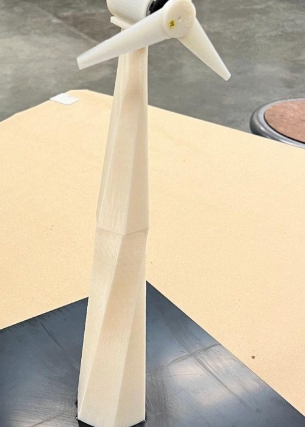

OVERVIEW
Designed and fabricated a functional wind turbine prototype with optimized blade twist and a modular twisted-facet tower. The system was developed using CAD, finite element analysis, and 3D printing to validate power output and structural stiffness under lab conditions.
BLADE DESIGN
Three-blade rotor with aerodynamic profiles and optimized twist angle along the span to maximize lift-to-drag ratio at the target operating wind speed. Blade geometry was iterated in CAD before FEA validation.
- 3-blade configuration for balanced torque and reduced vibration
- Twist optimization to maintain efficient angle of attack across blade length
- Nacelle housing for generator shaft and bearing assembly
TOWER STRUCTURE
Modular tower with a distinctive twisted-facet geometry — flat triangular panels create a spiraling structural form that tapers from base to nacelle. Mounted on a square steel base plate for stability during testing.

FEA ANALYSIS
Finite element analysis performed on blade and tower components to verify structural stiffness and identify stress concentrations before fabrication. Analysis informed material thickness and facet angle decisions.
| COMPONENT | ANALYSIS TYPE | CRITERION |
|---|---|---|
| Blade | Static stress | Max deflection under rated load |
| Tower | Buckling / stiffness | Factor of safety > 2.0 |
| Base plate | Reaction forces | Overturning moment resistance |
FABRICATION
Primary structural components 3D-printed for rapid iteration. Modular tower sections allow assembly/disassembly for transport and testing configuration changes.
- 3D-printed blades, nacelle, and twisted tower facets
- Metal shaft through nacelle for rotor assembly
- Square base plate for bench mounting
TEST RESULTS
Prototype tested under controlled lab wind conditions. Achieved efficient electricity generation with validated power output and acceptable structural stiffness. Results confirmed the twisted-blade and modular tower design met project objectives.